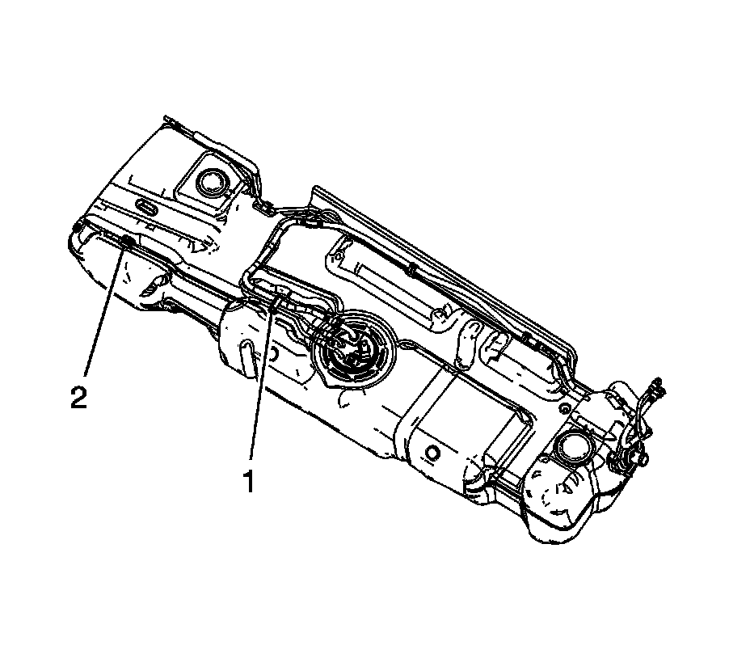
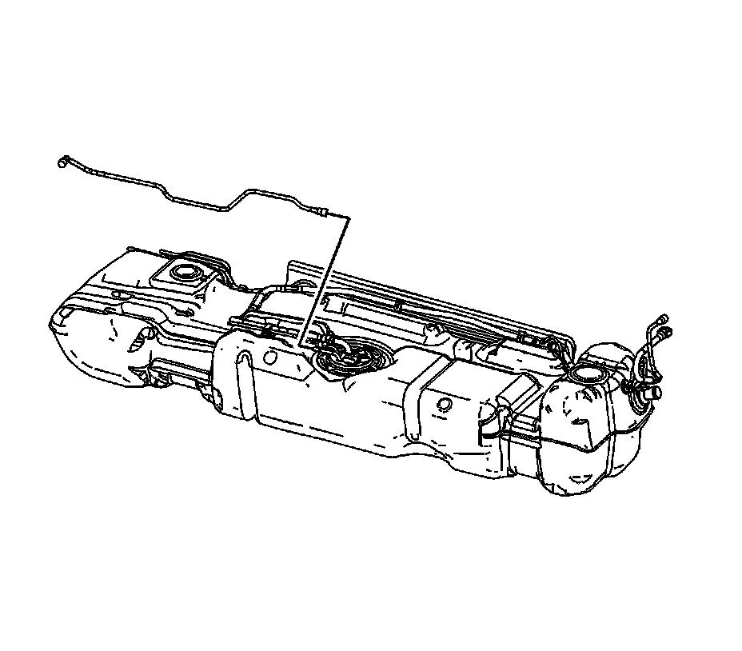

Fuel Hose/Pipes Assembly Replacement (1500 LWB - 117.3L (31 Gal) Tank )
FUEL HOSE/PIPES ASSEMBLY REPLACEMENT (1500 LWB - 117.3L (31 GAL) TANK)
REMOVAL PROCEDURE
IMPORTANT: Clean the fuel feed line connection and surrounding area prior to disconnecting the fitting in order to avoid possible fuel system contamination.

1. Remove the fuel tank.
2. Remove the fuel feed line from the retaining feature (2) in the fuel tank.
3. Open the fuel/EVAP line clip (1) and remove the fuel feed line from the clip.
4. Disconnect the fuel feed line quick connect fitting at the fuel tank module.

5. Remove the fuel feed line from the fuel tank.
6. Cap the fuel feed port on the fuel tank module in order to prevent possible fuel system contamination.
INSTALLATION PROCEDURE
1. Install the fuel feed line to the fuel tank.
2. Remove the cap from the fuel feed port on the fuel tank module.
3. Connect the fuel feed line quick connect fitting at the fuel tank module.
4. Install the fuel feed line to the clip (1) and close the clip.
5. Install the fuel feed line to the retaining feature (2) in the fuel tank.
6. Install the fuel tank.